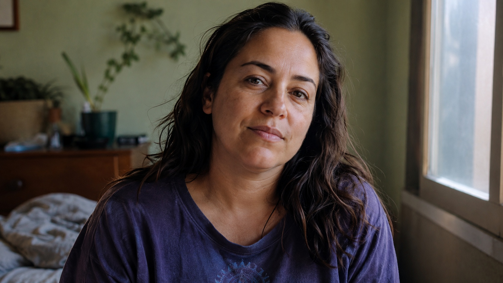

← BACK TO DOSSIERS LIST
CALIBRATION CASE FILE // TREND: RECREATING KODAK PORTRA 400 AESTHETIC: PROMPT RECIPE AND SETTINGS
Camera-Grade Portrait Realism: Forensic Calibration Through Five Layers of Reality
DATE: 2026-06-28
STATUS: EVIDENCE_DETECTION
ENGINE: CHATGPT DALL-E 3

SPECIMEN IMAGE #16:9 - CLEAN OPTICS
Portrait generation often defaults to polished faces, flawless lighting, and repetitive visual formulas that quickly reveal artificial origins. Genuine realism is not created by adding more detail but by respecting the imperfect behavior of optics, materials, lighting, and human appearance. Warm skin tones, soft pastel colors, and restrained grain become convincing only when they emerge from believable physical conditions rather than decorative styling.
In the sections above, we have broken the scene into five physical layers that define how a believable photograph behaves. Yet those layers are only part of the calibration process. The deeper improvement comes from changing the vocabulary itself. The calibration console at the end of the dossier demonstrates how small language-level substitutions fundamentally alter the simulation, replacing aesthetic shortcuts with physically grounded descriptions that produce more reliable camera-grade results.
This lexicon shift replaces abstract praise with observable evidence. Expressions such as "perfect skin" become descriptions of subtle pore visibility under window light, while "cinematic lighting" becomes scattered ambient daylight interacting with practical interior illumination. These changes improve calibration because they anchor prompts to measurable optical behavior, realistic material response, sensor characteristics, and environmental physics instead of subjective artistic language.
Returning to the original problem, realistic portrait synthesis depends less on visual embellishment than on disciplined physical description. If you want to build prompts that consistently reproduce believable photographic behavior instead of repeating generic AI aesthetics, explore the methodology presented in ALPHA REALISM. The complete calibration framework, expanded forensic analysis, and additional language transformation strategies are available through ALPHA REALISM.
The 5 Layers of Reality Applied
Subject:
A close portrait of an ordinary adult with naturally warm skin tones, subtle pore visibility, slight facial asymmetry, relaxed expression, realistic lip tension, loosely arranged hair with a few flyaway strands, everyday clothing with natural fabric folds, no cosmetic perfection, and a calm observational presence.
Environment:
Soft window light mixed with weak ambient room illumination, pastel-colored surroundings with gently faded surfaces, uneven shadow transitions, realistic light falloff, slight background clutter outside the focal plane, practical interior reflections, and naturally imperfect exposure distribution.
Physics:
Gravity influences fabric folds and posture, subtle hair displacement from minor indoor air movement, diffuse reflections from nearby walls, natural skin oil reflectivity, physically plausible depth transitions, and realistic interaction between light, skin texture, and surrounding materials.
Time:
Visible signs of everyday use including minor fabric wear, slight skin fatigue beneath the eyes, subtle color fading in clothing, gentle environmental dust accumulation, imperfect surface cleanliness, and naturally aged materials without dramatic deterioration.
Camera:
Simulated full-frame 50mm equivalent lens at approximately f/2.8, natural depth falloff, fine monochromatic grain, slight edge softness, realistic highlight rolloff, restrained dynamic range, mild sensor noise in darker regions, subtle lens imperfections, authentic color response, and documentary-style image processing.
The Lexicon Shift Table
| Appearance (Dead Adjective) |
|
Living Event (Cause & Effect) |
| perfect skin |
➔ |
skin texture showing subtle pores under soft window light |
| cinematic lighting |
➔ |
available daylight mixed with practical ambient illumination |
| flawless portrait |
➔ |
ordinary portrait with natural facial asymmetry and relaxed expression |
| ultra detailed face |
➔ |
realistic facial detail with selective texture retention and gentle optical softness |
| professional color grading |
➔ |
neutral camera color response with soft pastel tonal separation |
| hyper realistic |
➔ |
observational photographic realism shaped by physical camera behavior |
Calibration Prompt Console
Subject Layer: documentary portrait of an ordinary adult with warm skin tones, relaxed expression, naturally visible pores, slight facial asymmetry, everyday clothing showing realistic fabric folds, loose hair with subtle flyaway strands, no beautification, authentic identity preservation. Environment Layer: softly illuminated interior near a window, muted pastel surroundings, practical lighting, uneven shadow transitions, natural background separation, ordinary lived-in atmosphere. Physics Layer: gravity-driven fabric deformation, subtle hair movement, diffuse wall reflections, realistic skin reflectance, physically plausible optical depth, observational human posture. Time Layer: minor clothing wear, faint under-eye fatigue, gently aged materials, slight environmental dust, realistic signs of daily use without exaggeration. Camera Layer: full-frame 50mm equivalent, f/2.8, fine monochromatic grain, restrained dynamic range, realistic highlight rolloff, subtle edge softness, mild sensor noise, natural color response, documentary optical behavior, camera-grade photographic realism --ar 16:9
Do you want to generate precise AI images?
Unlock our alpha realism blueprint, physical reliable framework to get the best of your creations with the ALPHA REALISM Guide.
Download Ebook Now